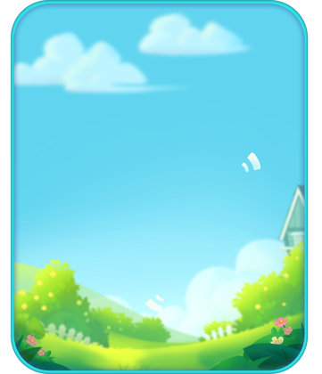
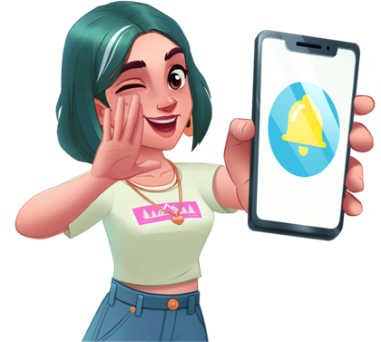

Ảnh chụp màn hình
Thông báo cục bộ và từ xa kéo người chơi quay lại: năng lượng đầy (100), máy tạo hồi xong, sự kiện bắt đầu/sắp kết thúc (5 giờ trước), nhắc buff sắp hết, nhắc…
Mô tả
- Thông báo cục bộ và từ xa kéo người chơi quay lại: năng lượng đầy (100), máy tạo hồi xong, sự kiện bắt đầu/sắp kết thúc (5 giờ trước), nhắc buff sắp hết, nhắc nhiệm vụ ngày, và chuỗi 'comeback' theo thời gian vắng mặt 6/24/48/168/240 giờ với giọng Quinn.
- Game xin quyền thông báo theo ngữ cảnh (hết năng lượng, máy hồi chiêu, sự kiện, Flaming Frenzy, Plane Parcels, Restaurant Goals) và dẫn người chơi vào cài đặt thiết bị.
Còn thiếu / chưa xác minh
Mở khóa & điểm vào
Có từ đầu; xin quyền theo ngữ cảnh.
Điểm vào:
- NotificationOpenWindow (xin quyền theo ngữ cảnh)
- Settings → Notifications
Cách hoạt động
- Khi gặp ngữ cảnh phù hợp (hết năng lượng, máy hồi chiêu, sự kiện sắp diễn ra…) game mở NotificationOpenWindow với lời giải thích tương ứng (notification_desc_*) → 'Turn On Now' dẫn tới cài đặt thiết bị.
- Client lên lịch thông báo cục bộ (năng lượng đầy, máy hồi, sự kiện mở/kết thúc, buff hết hạn, comeback theo mốc giờ) và lưu ID trong UNITY_STORED_NOTIFICATION_IDS / u_notification_data_<id>.
- FCM token đăng ký với server (PushToken, PushTokenUserId) để nhận thông báo từ xa.
- Mở app từ thông báo → NotificationManager.HandleLastNotification.
Luồng chi tiết theo code
Khi gặp ngữ cảnh phù hợp (hết năng lượng, máy hồi chiêu, sự kiện sắp diễn ra…) game mở NotificationOpenWindow với lời giải thích tương ứng (notification_desc_*) → 'Turn On Now' dẫn tới cài đặt thiết bị. Client lên lịch thông báo cục bộ (năng lượng đầy, máy hồi, sự kiện mở/kết thúc, buff hết hạn, comeback theo mốc giờ) và lưu ID trong UNITY_STORED_NOTIFICATION_IDS / u_notification_data_<id>. FCM token đăng ký với server (PushToken, PushTokenUserId) để nhận thông báo từ xa. Mở app từ thông báo → NotificationManager.HandleLastNotification.
Ảnh chụp màn hình (3)
3 ảnh tài nguyên trong APK. Bấm ảnh để phóng to; nhãn UC dẫn tới use case tương ứng.





Số liệu chính
| Chỉ số | Giá trị | Nguồn |
|---|---|---|
| Mốc comeback | 6, 24, 48, 168, 240 giờ | Mốc comeback — push_come_back_<h>_*_new |
| UNITY_STORED_NOTIFICATION_IDS, u_notification_data_<id> | 8 thông báo đã lên lịch (LDPlayer) | UNITY_STORED_NOTIFICATION_IDS, u_notification_data_<id> — shared_prefs |
Use case (5)
Bấm vào từng use case để mở. Mở/đóng tất cả
UC-01 Xin quyền theo ngữ cảnh
Các bước- NotificationOpenWindow + mô tả
- Turn On Now → cài đặt hệ thống
| Actor | System |
|---|---|
| Trigger | Ngữ cảnh (năng lượng/cooldown/sự kiện…) |
| Điều kiện | Chưa bật thông báo |
| Kết quả | Bật thông báo |
| Quy tắc / số liệu | Ngữ cảnh: energy, cash_dash, item_cooldown, frenzy, plane, weeklyactive |
| Evidence | text notification_*; prefab NotificationOpenWindow, NotificationTutorialWindow |
UC-02 Năng lượng đầy / máy hồi xong
Các bước- Thông báo 'Energy full! You're back to 100 energy!' / '{0} is ready to generate new items!'
| Actor | System |
|---|---|
| Trigger | Hết thời gian chờ |
| Điều kiện | Bật thông báo |
| Kết quả | Kéo quay lại |
| Quy tắc / số liệu | Có thể tắt riêng thông báo năng lượng đầy |
| Evidence | text push_energy_*, push_cooldown_*, notification_off_hint/on_hint |
UC-03 Sự kiện
Các bước- Thông báo mở / sắp kết thúc
| Actor | System |
|---|---|
| Trigger | Sự kiện mở / còn 5 giờ |
| Điều kiện | — |
| Kết quả | — |
| Quy tắc / số liệu | Dough Derby, Lollipop Hunt, Coconut's Sky Journey, Sam's Road Trip… |
| Evidence | text push_cash_dash_*, push_activity_Lollipop_*, push_event_* |
UC-04 Comeback
Các bước- Thông báo theo mốc 6/24/48/168/240 giờ
| Actor | System |
|---|---|
| Trigger | Vắng mặt |
| Điều kiện | — |
| Kết quả | Kéo quay lại; mốc 168 giờ hứa quà |
| Quy tắc / số liệu | — |
| Evidence | text push_come_back_*_new |
UC-05 Đăng ký FCM
Các bước- Lấy token
- Gửi server (PushToken[New]/[Same])
| Actor | System |
|---|---|
| Trigger | Đăng nhập |
| Điều kiện | — |
| Kết quả | Nhận push từ xa |
| Quy tắc / số liệu | — |
| Evidence | log 'PushToken[New]: token … userId …'; PlayerPrefs PushToken, PushTokenUserId |
Cấu hình (2)
Gộp mọi nguồn: const trong code, JSON mặc định trong Resources, bảng static, storage key, AB test, cờ server.
| Nguồn | Key | Kiểu | Giá trị | Ý nghĩa | Nơi định nghĩa |
|---|---|---|---|---|---|
| asset | Mốc comeback | int | 6, 24, 48, 168, 240 giờ | push_come_back_<h>_*_new | |
| storage key | UNITY_STORED_NOTIFICATION_IDS, u_notification_data_<id> | shared_prefs | 8 thông báo đã lên lịch (LDPlayer) | shared_prefs |
Backend / server
| Command | Chiều | Mục đích |
|---|---|---|
FCM token | client→server | Push từ xa |
Giao diện (UI)
| Element | Class | Mục đích |
|---|---|---|
| Xin quyền | Prefabs/Window/NotificationOpenWindow |
Storage keys
PushToken PushTokenUserId UNITY_STORED_NOTIFICATION_IDS
Chưa đọc được / ghi chú
- Lịch thông báo từ xa do server
Tính năng liên quan
Năng lượng Bảng merge Khung sự kiện chung Người chơi quay lại Cài đặt, hỗ trợ & khảo sát
Nguồn đã đọc
- notes/packs/Notifications.md
- facts/runtime/raw (shared_prefs)